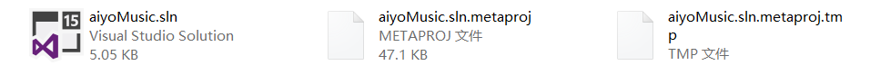

msbuild(3)-用命令行部署web
msbuild除了可以构建.proj文件之外，还可用解决方案.sln文件构建目标！
msbuild *.sln
VS文档网站关于如何使用msbuild构建.sln文件中指定的target，描述的已经很清楚了！
How to: Build Specific Targets in Solutions By Using MSBuild.exe
值得注意的是Troubleshooting这一节，可以通过环境变量MSBUILDEMITSOLUTION=1查看msbuild构建运行时的解决方案内部结构：
# 在developer command prompt下运行
set MSBUILDEMITSOLUTION=1
msbuild aiyoMusic.sln
会在当前目录下生成2个文件aiyoMusic.sln.metaproj和aiyoMusic.sln.metaproj.tmp

Command Line Deployment(命令行部署)
ASP.NET Web Deployment using Visual Studio: Command Line Deployment
上述文章详细描写了自动化部署与持续集成的相关内容，msbuild内部处理程序对发布进行了处理。
命名空间:Microsoft.TeamFoundation.Build.Workflow.Activities
msbuild详细属性
msbuild内置属性DeployOnBuild和PublishProfile
使用.sln解决方案文件部署web的时候，如下指定2个参数即可：
msbuild aiyoMusic.sln /p:DeployOnBuild=true;PublishProfile=test;Configuration=Release;Platform=x86
说明：其中PublishProfile的值指定为自定义的.pubxml文件(路径为"Properties\PublishProfiles")的名称即可，比如上例的test。

设置Configuration和Platform属性
当我们通过VS手动发布(manually)站点的时候，需要从下拉列表选择发布使用的版本及所用平台，

等同于给全局变量Configuration与Platform赋值。因此当我们从命令行(command line prompt)执行msbuild构造时，需要手动给全局变量Configuration和Platform赋值！